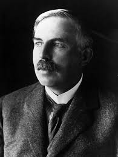

Quem foi Rutherford?

Ernest Rutherford nasceu em Nelson, uma cidade portuária ao sul da Nova Zelândia, em 30 de agosto de 1871. Era o quarto filho de uma família de doze filhos, sendo seis irmãos e cinco irmãs.
Seu pai era um mecânico escocês e sua mãe era professora de inglês.
Rutherford estudou em escolas públicas e em 1893 graduou-se em Matemática e Ciências Físicas pela Universidade da Nova Zelândia. Estudou no laboratório de Cavendish, no Trinitty College, em Cambridge, na Inglaterra. Era coordenado por Joseph John Thomson.
Foi professor no Canadá em 1898 e em 1907 na Inglaterra, em Manchester. Recebeu o Prêmio Nobel de Química em 1908 por seus trabalhos sobre radioatividade e teoria nuclear.
Em 1919 introduziu a ideia de núcleo atômico. Percebeu que o átomo possuia um núcleo muito denso, pequeno e com cargas positivas. O átomo então era formado por um núcleo com elétrons girando ao seu redor em orbitas elípticas. Suas ideias atomísticas impulsionaram um novo cientista que deu continuação ao seu trabalho, Niels Bohr.
Foi presidente da Royal Society de 1925 a 1930. Dirigiu o laboratório de Cavendish até o fim de sua vida. Recebeu o Order of Merit em 1925 e em 1931 foi condecorado Baron Rutherfod de Nelson.
Morreu em 1937 após aguardar uma cirurgia que só poderia ser realizada por um médico nobre, assim como ele.